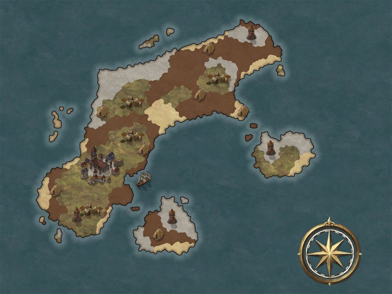

<ion-header>
  <ion-toolbar *ngIf="config">
    <ion-buttons slot="start">
      <ion-button>
        <ion-icon
          slot="icon-only"
          [name]="config.isMaster ? 'people-circle-outline' : 'person-circle-outline'"
        ></ion-icon>
      </ion-button>
    </ion-buttons>
    <ion-buttons slot="end" *ngIf="config">
      <ion-button id="trigger-button">
        <ion-icon slot="icon-only" name="ellipsis-vertical"></ion-icon>
      </ion-button>

      <ion-popover trigger="trigger-button" [dismissOnSelect]="true">
        <ng-template>
          <ion-content>
            <ion-list>
              <ion-item [button]="true" (click)="syncData()">
                <ion-label>Синхронизировать данные</ion-label>
              </ion-item>
              <ion-item
                [button]="true"
                *ngIf="!config.isMaster"
                (click)="onSwitchMode()"
              >
                <ion-label>Включить режим мастера</ion-label>
              </ion-item>
              <ion-item
                [button]="true"
                *ngIf="config.isMaster"
                (click)="onSwitchMode()"
              >
                <ion-label>Выключить режим мастера</ion-label>
              </ion-item>
            </ion-list>
          </ion-content>
        </ng-template>
      </ion-popover>
    </ion-buttons>
  </ion-toolbar>
</ion-header>

<ion-content>
  <section id="spinner-section" *ngIf="isDataLoading; else elseblock">
    <div class="loader"></div>
  </section>

  <ng-template #elseblock>
    <section>
      <div *ngIf="config && syncRequired"  class="sync-required">
        Последняя синхронизация была {{ lastSyncDate }}. Необходимо
        синхронизировать данные приложения.
      </div>
      <h1>Арбор 2022</h1>
      <h2>Затерянный Город</h2>
      
    </section>
  </ng-template>
</ion-content>
